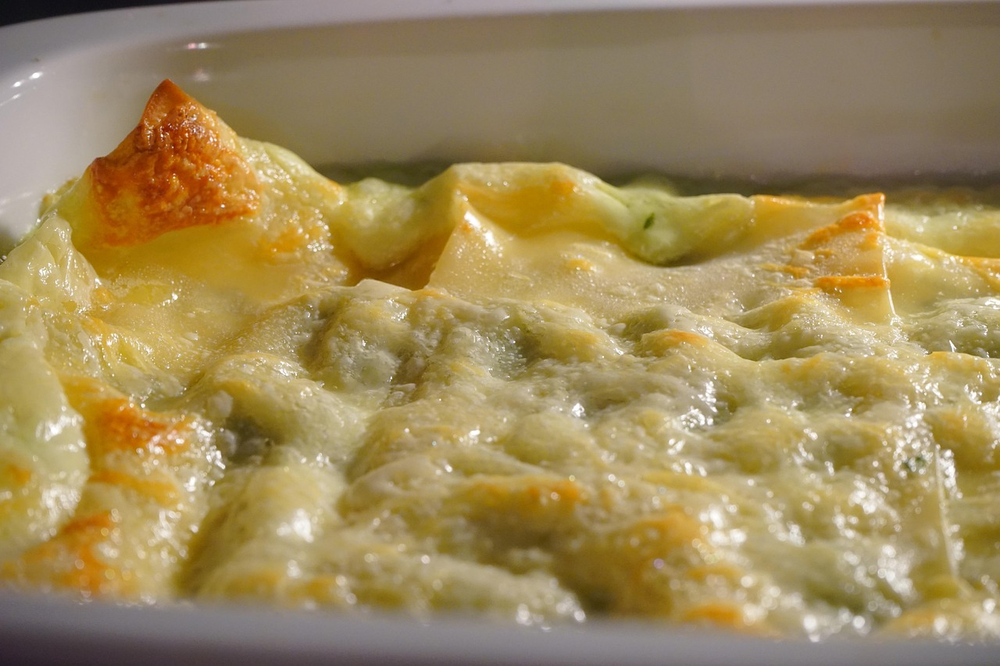

Equipment: mixer, 2 loaf pans, kitchen towl or lid, measuring cups and spoons
Instructions
In mixing bowl, combine warm water, a pinch of sugar, and yeast. Let it sit for about 5-10 minutes until it becomes frothy.
Add olive oil, salt, and 3 cups of flour to the yeast mixture. Mix until combined.
Gradually add the remaining flour, 1/2 cup at a time, until a dough forms.
Knead the dough on a floured surface for about 8-10 minutes until smooth and elastic.
Place the dough in a greased bowl, cover with a kitchen towel or lid, and let it rise in a warm place for about 1 hour or until doubled in size.
Punch down the dough and divide it into two equal parts. Shape each part into a loaf and place them in greased loaf pans.
Cover the pans and let the dough rise again for about 45 minutes until it reaches the top of the pans.
Preheat your oven to 375°F (190°C). Bake the loaves for 30-33 minutes or until golden brown and sounds hollow when tapped.
Remove from oven and let cool on a wire rack before slicing.
Dinner
Enchilada Casserole

Ingredients:
3 lb ground beef
12 corn tortillas
1 pound shredded cheese (cheddar or Mexican blend)
3 cans Cream of Chicken soup
1 can diced green chilies
1 can sliced olives
16 oz sour cream
Equipment: baking dish, skillet
Instructions
Preheat your oven to 350°F (175°C).
In a large skillet, cook the ground beef over medium heat until browned. Drain any excess fat.
In a mixing bowl, combine the Cream of Chicken soup, diced green chilies, and sour cream. Mix well.
Spread a thin layer of the soup mixture on a tortilla.
Add a layer of ground beef and cheese (about 1/4 cup each).
Roll and place in casserole dish.
Repeat for remaining tortillas.
Cover tortillas with remaining soup mixture,cheese and sliced olives.
Cover the baking dish with aluminum foil and bake for 30 minutes. Then remove the foil and bake for an additional 10-15 minutes until the cheese is bubbly and golden brown.
Let it cool for a few minutes before serving. Enjoy!